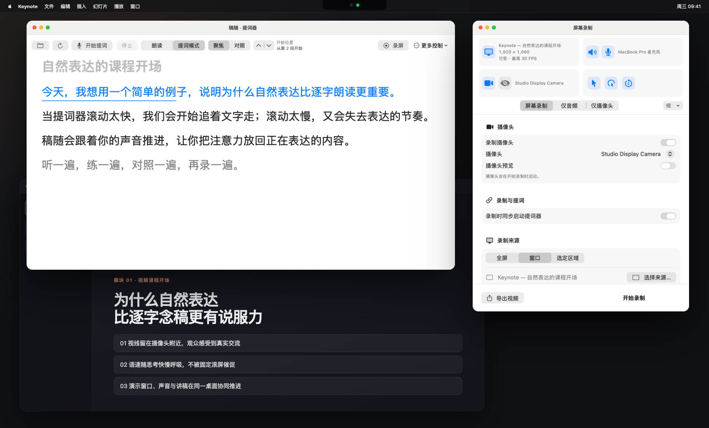
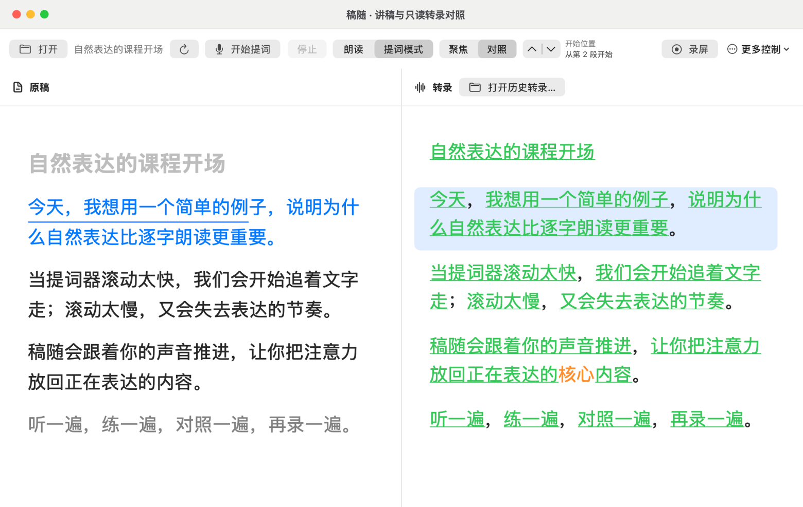

听顺语感
先让 Mac 系统朗读一遍，开机前听出书面长句的拗口处。
视频录制工作解决方案 · 创作者 · 讲师 · OPC · 团队
围绕一份脚本，打通拍前排练、贴镜头语音跟读与计划中的分层录屏——单人成片与团队协作皆从容。

核心亮点 01 · 围绕脚本，从排练到现场发挥
告别匀速滚屏的“追词跑”与“停下等”，让提词器真正听懂你的内容：
听顺语感 · 离线排练 · 跟着声音走 · 现场发挥与复盘
先让 Mac 系统朗读一遍，开机前听出书面长句的拗口处。
在 iPhone 上随时跟读热身，把逐字稿练成自然口语。
开启贴镜头 Voice Follow，按讲稿内容随自然语速推进。
承接语音跟随，支持临场发挥、口令重录、跳段与转录复盘。
左侧保留原讲稿，右侧按段落高亮匹配只读语音转录——清晰复盘重录与临场发挥，绝不擅自改写原稿。

三端自然配合 · 单人控场与团队协助皆宜
Mac 引导摄像头视线；iPhone 与免费配套的 Apple Watch 兼顾个人盲操与同事场外控场。


三大高频视频录制场景
当下即可搭配相机与录屏工具开拍；内置 Mac 分层录制计划接入同一工作流。
搭配微单、连续互通相机或 OBS，提词窗紧贴镜头正下方，专注镜头表达。
几十段长课稿先听语感、离线排练，大幅减少正式开录后的重拍。
直接在日常工作 Mac 锁定目标窗口开拍，既适合个人快出，也方便移交剪辑师。
核心亮点 02 · 即将推出 · 一机四用，留足后期处理空间
告别把人像、光标与音轨压死在同一画面的传统录屏，兼顾个人快速成片与专业精剪。

开拍前用窗口或区域预置锁定目标画面，倒计时归零同步启动采集与自然提词；拍完无需换机，即可在内置编辑器中重调人像画中画、主体抠像与鼠标点击高亮，并按预置一键交付。
无需清空桌面或另备录制专机，日常主力 Mac 原地完成演示、采集与出片。
时间零点对齐的多层素材包与 SRT 字幕，无缝接入 Final Cut、Premiere 或 DaVinci。
录制素材按讲稿自动建夹，支持导入外部生产成片加星标、写备注统一筛选。
注：内置 Mac 录屏与导出归档工作台随 Ultra 版本即将发布，上线时间以 App Store 页面为准。
方案与价格
按需选择纯提词工作流，或解锁内置 Mac 分层录屏与归档。
适合纯提词与外接相机实拍
按月自动续期
按年自动续期
适合一站式桌面录制与分层后期
按年自动续期
一次性购买
符合条件的新订阅者可享 Pro 7 天或 Ultra 1 个月试用；Ultra 即将发布，最终价格与试用资格以 App Store 页面为准。
无需注册账号。练习语音不存原始音频；内置录制与导入成片仅保存在本地 Mac，绝不上传服务器。